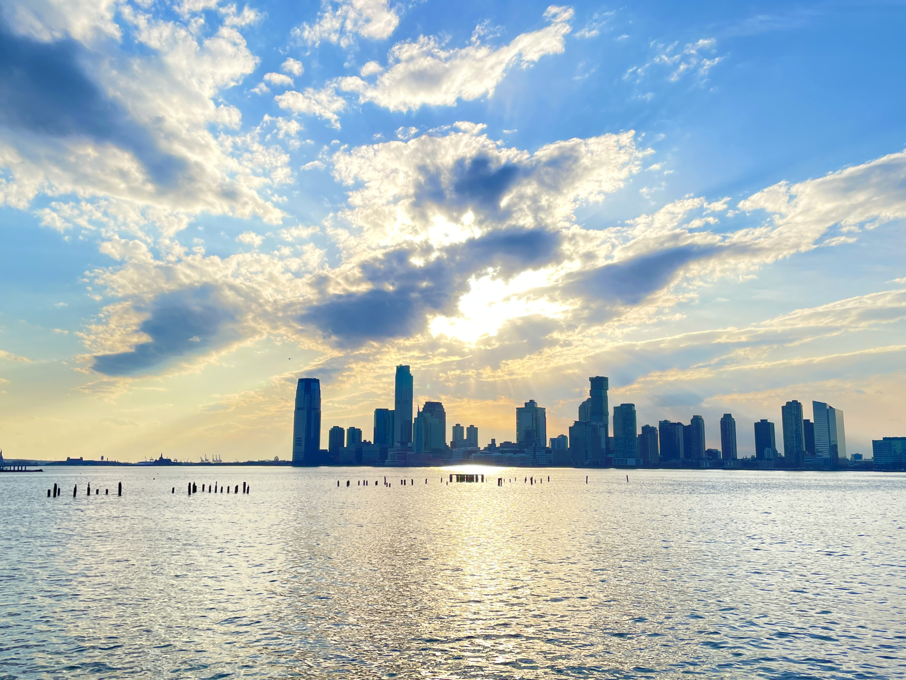
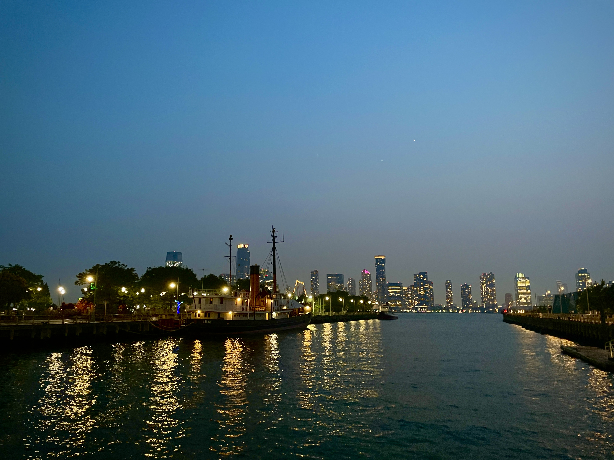
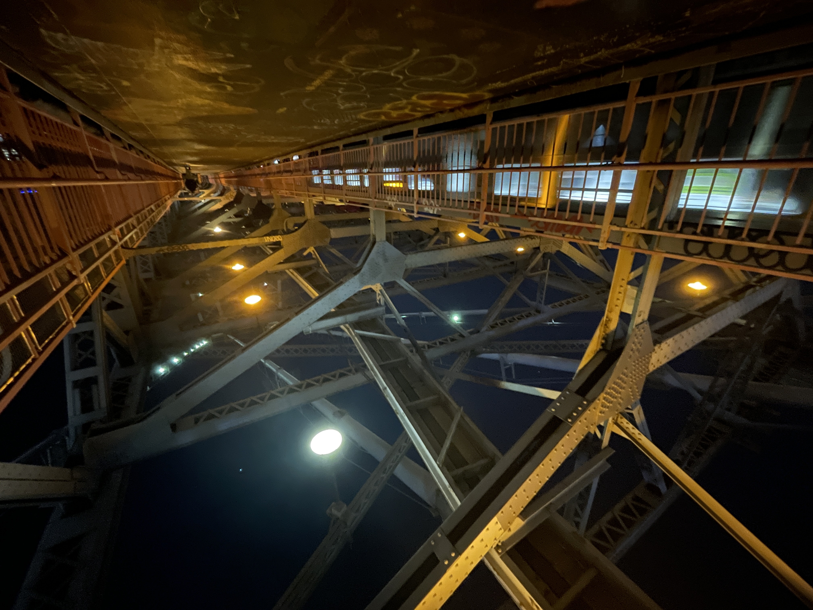

Urban Dusk
Till Dark
sometimes it feels like its harder to catch that part of the day here

deeper in, it feels more like a roof than a sky
I used to live by the water.
I think I might need to.

but the city has its own little stars
we vaunt them in concrete spires


colored light is additive, a palette unto forms
thus, Behold the Steel Sublime